25 The Behavior of Least Squares Predictors
Introduction
This is a revised version of Lecture 12 as covered in class. It’s a work in progress. Parts may be useful as supplemental reading but it isn’t yet entirely coherent or complete enough to be a replacement for the version from class.
Today’s Topic
$$ \newcommand{X}{} \newcommand{Y}{}
$$

We’re going to talk about statistical inference when we use least squares in linear models. For example … \[ \color{gray} \begin{aligned} \theta &= \frac{1}{m}\sum_{j=1}^m \qty{ \mu(1,x_j) - \mu(0,x_j) } \qfor \mu(w,x)=\frac{1}{m_{w,x}}\sum_{j:w_j=w,x_j=x} y_j \\ \hat\theta &= \frac{1}{n}\sum_{i=1}^n \qty{ \hat\mu(1,X_i) - \hat\mu(0,X_i) } \qfor \hat\mu = \mathop{\mathrm{argmin}}_{m \in \mathcal{M}} \sum_{i=1}^n \qty{ Y_i - m(X_i) }^2 \end{aligned} \]
- Does it look like this is a good estimator?
- If not, do you think it’s too big or too small?
Summary
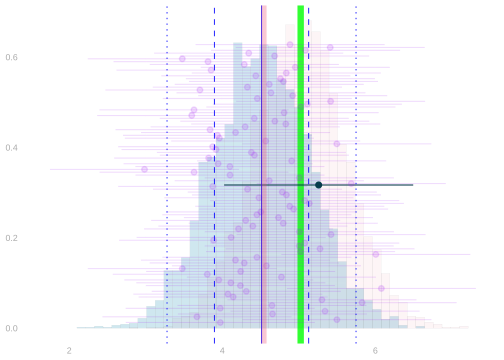

- In this case, \(\hat\theta\) is too small. And that’s not just a chance occurrence.
- When we look at its sampling distribution, we see that it’s systematically too small.
- It’s biased. In roughly 95% of samples, \(\hat\theta\) will be smaller than \(\theta\).
- It boils down to a bad choice of regression model.
- To make sense of this, think about what happens when everything else is perfect.
- i.e. if we fit this model to the whole population, then average over the population.
- The result is nonrandom. And it’s right in the middle of our estimator’s sampling distribution. \[ \textcolor[RGB]{239,71,111}{\tilde\theta} = \frac{1}{m}\sum_{j=1}^m \qty{ \tilde\mu(1,x_j) - \tilde\mu(0,x_j) } \qfor \tilde\mu = \mathop{\mathrm{argmin}}_{m \in \mathcal{M}} \frac{1}{m}\sum_{j=1}^m \qty{y_j - m(w_j,x_j)}^2 \]
We can think of our estimator’s error as a sum of two things.
\[ \hat\theta - \theta = \underset{\text{sampling error}}{\qty{\hat\theta - \textcolor[RGB]{239,71,111}{\tilde\theta}}} + \underset{\text{modeling error}}{\qty{\textcolor[RGB]{239,71,111}{\tilde\theta} - \theta}} \]
- Sampling error is the ‘variance part’. It’s random and has mean zero.
- It’s the error we’d have had if what we’d really wanted to estimate was \(\tilde\theta\).
- We can get a good estimate of this term’s distribution using the bootstrap.
- Modeling error is the ‘bias part’. It’s non-random—it’s the bias of our estimator.
- It’s the error we’d have had if we’d been given the whole population as our sample.
- This is zero if your model contains the subpopulation mean function \(\mu(w,x)\).
- e.g. when you use the ‘all functions’ model.
- That we have a nice, clean breakdown of our error like this isn’t obvious.
- You can, of course, add and subtract whatever you want. We chose \(\textcolor[RGB]{239,71,111}{\tilde\theta}\).
- But it’s not obvious that the sampling error term \(\hat\theta - \textcolor[RGB]{239,71,111}{\tilde\theta}\) has mean zero.
- We say a model is correctly specified when it contains \(\mu\)
- We say it is misspecified when it doesn’t contain \(\mu\).
Plan
\[ \hat\theta - \theta = \underset{\text{sampling error}}{\qty{\hat\theta - \textcolor[RGB]{239,71,111}{\tilde\theta}}} + \underset{\text{modeling error}}{\qty{\textcolor[RGB]{239,71,111}{\tilde\theta} - \theta}} \]
- Today, we’ll do two things.
- We’ll prove that the sampling error term has mean zero.
- In fact, we’ll prove that it’s an average of mean-zero random variables.
- That’ll take a little calculus. It’s not a hard proof, but it’s a little clever.
- Then, we’ll try to get a handle on what modeling error looks like for different models.
- This’ll be a visualization exercise to help you develop some intuition.
- This intuition comes in very handy because a lot of people don’t have it.1
- With even pretty basic intuition, you can catch a lot of mistakes and get them fixed.
Orthogonality of Residuals
The tool for understanding least squares.
Review: Least Squares and the Sample Mean
\[ \hat \mu = \mathop{\mathrm{argmin}}_{\text{numbers}\ m} SSR(m) \qfor SSR(m) =\sum_{i=1}^n \qty{ Y_i - m }^2 \quad \text{ satisfies the \textbf{zero-derivative condition} } \]
\[ \begin{aligned} 0 &= \frac{d}{dm} \sum_{i=1}^n \qty{ Y_i - m }^2 \ \ \mid_{m=\hat\mu} &&= \sum_{i=1}^n \frac{d}{dm} \qty{ Y_i - m }^2 \ \ \mid_{m=\hat\mu} \\ &= \sum_{i=1}^n -2 \qty{ Y_i - m } \ \ \mid_{m=\hat\mu} &&= \sum_{i=1}^n -2 \qty{ Y_i - \hat\mu } \end{aligned} \]
- This says the least squares residuals \(\hat\varepsilon = Y_i - \hat \mu\) sum to zero.
- With a bit of algebra, this tells us that the least squares estimator \(\hat\mu\) is the sample mean.
\[ \begin{aligned} &0 = \sum_{i=1}^n -2\qty{ Y_i - \hat\mu } && \text{ when } \\ &2\sum_{i=1}^n Y_i = 2\sum_{i=1}^n \hat\mu = 2n\hat\mu && \text{ and therefore when } \\ &\frac{1}{n}\sum_{i=1}^n Y_i = \hat\mu \end{aligned} \]
Least Squares and Subsample Means
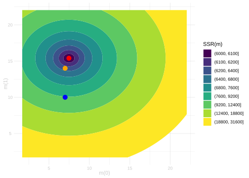
\[ \hat \mu = \mathop{\mathrm{argmin}}_{\text{functions}\ m(w)} SSR(m) \qfor SSR(m) =\sum_{i=1}^n \qty{ Y_i - m(W_i) }^2 \]
- How do we write a zero-derivative condition for this problem?
- i.e., how do we talk about the derivative with respect to a function?
- Like many things in multivariable calculus, we think one ‘direction’ at a time.
- Let’s start with something simpler. How do we visualize this problem?
- We can think of each function \(m\) as a location in a two-dimensional space.
- One dimension is the value of \(m(0)\), the other is the value of \(m(1)\).
- And we can use a contour plot to visualize the sum of squared residuals at each location.
- If you hike or run, you probably see these plots all the time. They’re used to show elevation.
- So you can think of the function we’re minimizing, \(SSR\), as the elevation of some landscape.
- The point we’re looking for, \(\hat\mu\), is the lowest point in that landscape.
- I’ve drawn in dots showing the height at the within-group means, medians, and modes.
- The means are the lowest point. Let’s prove it.
Least Squares and Subsample Means
\[ \hat \mu = \mathop{\mathrm{argmin}}_{\text{functions}\ m(w)} SSR(m) \qfor SSR(m) =\sum_{i=1}^n \qty{ Y_i - m(W_i) }^2 \]
- To write a zero-derivative condition, let’s keep our landscape metaphor going.
- Let’s think about what happens if you start at the lowest point — the means — and hike uphill.
- Each point on the path2 you take is a location in our landscape: a function \(m\) in our model.
- We could, for example, hike straight toward the groupwise medians. I’ve drawn that path in orange.
- At ‘time’ \(t=0\)—when we start—we’re at the means.
- At ‘time’ \(t=1\)—when we finish—we’re at the medians.3 \[ m_t = \hat \mu + t (m - \hat \mu) \qqtext{ is 'where we are' at time } t. \]
- When we take this path, what’s our elevation — the height of the \(SSR\) landscape —at time \(t\)?
\[ \begin{aligned} SSR(m_t) &= \sum_{i=1}^n \qty{ Y_i - m_t(W_i) }^2 \\ &= \sum_{i=1}^n \qty{ Y_i - \hat\mu(W_i) - t (m(W_i) - \hat\mu(W_i)) }^2 \end{aligned} \]
- This is a univariate function—a function of \(t\).
- It’s minimized at \(t=0\) because we’re starting at
the lowest point: the least squares predictor \(\hat\mu\). - That tells us that its derivative is zero at \(t=0\).
\[ \begin{aligned} 0 = \frac{d}{dt}\mid_{t=0} SSR(m_t) \end{aligned} \]
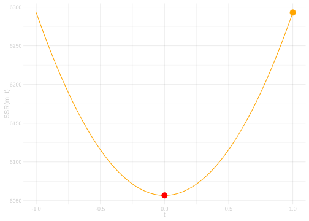
Our Zero-Derivative Condition
- To make the math a bit easier, we’ll define our paths slightly differently.
- We’ll think of \(m\) as a direction instead of a destination.
\[ m_t = \hat\mu + t m \qqtext{ is 'where we are' at time } t \color{lightgray} \qqtext{ instead of } m_t = \hat\mu + t (m - \hat\mu). \]
- No matter what direction \(m \in \mathcal{M}\) we look at, our whole path \(\hat\mu + tm\) is in the model.
- Why? Because our model is linear, \(\hat\mu + tm \in \mathcal{M}\) whenever \(\hat\mu \in \mathcal{M}\) and \(m \in \mathcal{M}\).
- And because \(\hat\mu\) is the lowest point in our whole landscape (i.e. our model \(\mathcal{M}\)), it has to be the lowest point in our path.
- Now let’s see what our zero-derivative for \(SSR(m_t)\) tells us.
\[ \begin{aligned} 0 = \frac{d}{dt}SSR(m_t) &= \frac{d}{dt}\mid_{t=0} \sum_{i=1}^n \qty{ Y_i - \hat\mu(W_i) - tm(W_i) }^2 \\ &= \sum_{i=1}^n 2 \times \qty{ Y_i - \hat\mu(W_i) } \times \frac{d}{dt}\mid_{t=0} \ \qty{ Y_i - \hat\mu(W_i) - tm(W_i) } \\ &= \sum_{i=1}^n -2 \times \qty{ Y_i - \hat\mu(W_i) } \times m(W_i) \\ \end{aligned} \]
- Below, I’ve drawn this function for three different directions \(m \in \mathcal{M}\).
\[ \underset{\text{left}}{\textcolor{red}{m(w)}} = 1_{=0}(w) = \begin{cases} 1 & \text{ if } w=0 \\ 0 & \text{ if } w=1 \end{cases} \qquad \underset{\text{middle}}{\textcolor{magenta}{m(w)}} = 1_{=1}(w) = \begin{cases} 0 & \text{ if } w=0 \\ 1 & \text{ if } w=1 \end{cases} \qquad \underset{\text{right}}{\textcolor{orange}{m(w)}} = 1 \]
- By working with these, we can show some familiar properties of the residuals.
- We know that \(\hat\mu\) is the minimizer of \(SSR(\hat\mu + tm)\) for any \(m \in \mathcal{M}\) …
- so the derivative of \(SSR(\hat\mu + tm)\) with respect to \(t\) must be zero at \(t=0\).
\[ \begin{aligned} 0 &= \frac{d}{dt}\mid_{t=0} \ \sum_{i=1}^n \qty{ Y_i - \hat\mu(W_i) + tm(W_i) }^2 \\ &= \sum_{i=1}^n 2 \times \qty{ Y_i - \hat\mu(W_i) } \times \frac{d}{dt}\mid_{t=0} \ \qty{ Y_i - \hat\mu(W_i) - tm(W_i) } \\ &= \sum_{i=1}^n -2 \times \qty{ Y_i - \hat\mu(W_i) } \times m(W_i) \\ \end{aligned} \]
- For the case \(m(w) = 1_{=1}(w)\), this says the residuals sum to zero within group \(w=1\).
- For the case \(m(w) = 1_{=0}(w)\), this says the residuals sum to zero within group \(w=0\).
- For the case \(m(w) = 1\), this says the residuals sum to zero outright.
Orthogonality of Residuals in General
- There’s nothing specific to this model in the math we just did. It works for any linear model.
- No matter which linear model we use, we can always think one direction at a time.
\[ \begin{aligned} \hat\mu &\qqtext{minimizes} \sum_{i=1}^n \qty{ Y_i - m(W_i,X_i) }^2 &&\qqtext{ over } m \in \mathcal{M}\implies \\ \hat\mu &\qqtext{minimizes} \sum_{i=1}^n \qty{ Y_i - m(W_i,X_i) }^2 &&\qqtext{ over } m \in \{ m_t = \hat\mu + t m \ : \ t \in \mathbb{R} \} \qqtext{ for any } m \in \mathcal{M} \end{aligned} \]
- Writing mean squared error as a function of \(t\) in this model …
- We can observe that it’s minimized at \(t=0\), since that’s when \(\hat\mu + tm=\hat\mu\)
- And we can set the derivative to zero there to get the orthogonality condition we want.
\[ \begin{aligned} 0 &= \frac{d}{dt}\mid_{t=0} \sum_{i=1}^n \qty{ Y_i - \hat\mu(W_i,X_i) - t m(W_i,X_i) }^2 \\ &= \sum_{i=1}^n 2 \times \qty{ Y_i - \hat\mu(W_i,X_i) } \frac{d}{dt}\mid_{t=0} \qty{ Y_i - \hat\mu(W_i,X_i) - t m(W_i,X_i) }^2 \\ &= \sum_{i=1}^n 2 \times \qty{ Y_i - \hat\mu(W_i,X_i) } \times -m(W_i,X_i) \\ \end{aligned} \]
The Expected Value of the Least Squares Predictor \(\hat\mu(w,x)\)
The Population Least Squares Predictor

- To make it easier to think about what happens when we do least squares, let’s do a thought experiment.
- Let’s take all the randomness out of the picture.
- Let’s think about what would happen if we chose the function in our model \(\mathcal{M}\) that minimizes the sum of squared error over the whole population.
- We call this the population least squares predictor.
\[ \begin{aligned} \tilde\mu &= \mathop{\mathrm{argmin}}_{m \in \mathcal{M}} \sum_{j=1}^m \qty{ y_j - m(w_j,x_j) }^2 \\ &\overset{\texttip{\small{\unicode{x2753}}}{When we sample uniformly-at-random from the population, this expectation is $1/m$ times the sum above.}}{=} \mathop{\mathrm{argmin}}_{m \in \mathcal{M}} \mathop{\mathrm{E}}\qty[ \qty{ Y_i - m(W_i,X_i) }^2 ] \end{aligned} \]
- It’s reasonable to expect it’s a good approximation to the least squares predictor we get from a large sample.
- After all, the law of large numbers tells us that sample averages converge to a population averages.
- Including the sample average of squared errors.4 \[ \frac{1}{n}\sum_{i=1}^n \qty{ Y_i - \hat\mu(W_i,X_i) }^2 \to \mathop{\mathrm{E}}\qty[ \qty{ Y_i - \hat\mu(W_i,X_i) }^2 ] \qqtext{ as } n \to \infty. \]
- It turns out that we can say even more than this. It’s also the expectation of the least squares predictor.
- In other words, if the population least squares prediction \(\tilde\mu(w,x)\) were our estimation target…
- … then the least squares predictor we get from a sample would be an unbiased estimator for it.
\[ \mathop{\mathrm{E}}[\hat\mu(w,x)] = \tilde\mu(w,x) \]
To prove it, we’ll think about the population least squares residuals \(\tilde\varepsilon_j = y_j - \tilde\mu(w_j,x_j)\).
These satisfy an orthogonality property analogous to the one we saw for sample residuals. \[ \begin{aligned} 0 &= \textcolor[RGB]{192,192,192}{\frac{1}{n}}\sum_{i=1}^n \overset{\textcolor{lightgray}{\text{sample residuals}}}{\color{gray}\left\{ \color{black} Y_i - \hat\mu(W_i,X_i) \color{gray} \right\} \color{black}} \ m(W_i,X_i) && \qqtext{ for all } m \in \mathcal{M}\\ 0 &= \textcolor[RGB]{192,192,192}{\frac{1}{m}}\sum_{j=1}^m \overset{\textcolor{lightgray}{\text{population residuals}}}{\color{gray}\left\{ \color{black} y_j - \tilde\mu(w_j,x_j) \color{gray} \right\} \color{black}} \ m(w_j,x_j) && \qqtext{ for all } m \in \mathcal{M}\\ &= \mathop{\mathrm{E}}\qty[ \qty{ Y_i - \tilde\mu(W_i,X_i) } \ m(W_i,X_i) ] \end{aligned} \]
To prove ‘unbiasedness’, we’ll combine these two orthogonality properties in a clever way.
The Claim and Proof Sketch
Claim. \[ \begin{aligned} \tilde\mu(w,x) &= \mu_E(w,x) && \qfor \mu_E(w,x) = \mathop{\mathrm{E}}[\hat\mu(W_i,X_i) \mid W_i=w, X_i=x] \\ &&& \qand \tilde\mu = \mathop{\mathrm{argmin}}_{m \in \mathcal{M}} \sum_{j=1}^m \qty{ y_j - m(w_j,x_j) }^2 \end{aligned} \]
Proof Sketch. 1. We’ll show that orthogonality of residuals implies a kind of orthogonality of the difference \(\hat\mu - \tilde\mu\). \[ 0=\mathop{\mathrm{E}}\left[ \color{gray}\left\{ \color{black} \hat\mu(W_i,X_i) - \tilde\mu(W_i,X_i) \color{gray} \right\} \color{black} \ m(W_i,X_i) \right] \qqtext{ for all } m \in \mathcal{M} \]
- We’ll plug in a clever choice of \(m \in \mathcal{M}\): \(m=\mu_E - \tilde \mu\) and show, using the law of iterated expectations, that this tells us the mean-squared-difference between \(\mu_E\) and \(\tilde\mu\) is zero.5 \[ \begin{aligned} 0 &= \mathop{\mathrm{E}}\left[ \color{gray}\left\{ \color{black} \hat\mu(W_i,X_i) - \tilde\mu(W_i,X_i) \color{gray} \right\} \color{black} \ \qty{ \mu_E(W_i,X_i) - \tilde\mu(W_i, X_i) } \right] \\ &= \mathop{\mathrm{E}}\left[ \color{gray}\left\{ \color{black} \mu_E(W_i,X_i) - \tilde\mu(W_i,X_i) \color{gray} \right\} \color{black}^2 \right] \end{aligned} \]
Proof: Part 1
- From the orthogonality of the sample residuals, all \(m \in\mathcal{M}\) satisfy …
\[ \begin{aligned} 0 &= \frac{1}{n}\sum_{i=1}^n \color{gray}\left\{ \color{black} Y_i -\hat\mu(W_i,X_i) \color{gray} \right\} \color{black} \ m(W_i,X_i) \qqtext{ and therefore } \\ 0 &= \mathop{\mathrm{E}}\left[ \frac{1}{n}\sum_{i=1}^n \color{gray}\left\{ \color{black} Y_i -\hat\mu(W_i,X_i) \color{gray} \right\} \color{black} \ m(W_i,X_i) \right] \\ &= \mathop{\mathrm{E}}\left[ \color{gray}\left\{ \color{black} Y_i - \hat\mu(W_i,X_i) \color{gray} \right\} \color{black} \ m(W_i,X_i) \right]. \end{aligned} \]
- From the orthogonality of the population residuals, all \(m \in\mathcal{M}\) satisfy …
\[ \begin{aligned} 0 &= \mathop{\mathrm{E}}\left[ \color{gray}\left\{ \color{black} Y_i - \tilde \mu(W_i,X_i) \color{gray} \right\} \color{black} \ m(W_i,X_i) \right] \\ \end{aligned} \]
- Subtracting the first from the second, we find that all \(m \in \mathcal{M}\) satisfy …
\[ \begin{aligned} 0 &= \mathop{\mathrm{E}}\left[ \color[RGB]{17,138,178}\left\{ \color{black} \color{gray}\left\{ \color{black} Y_i- \tilde\mu(W_i,X_i) \color{gray} \right\} \color{black} - \color{gray}\left\{ \color{black} Y_i - \hat\mu(W_i,X_i) \color{gray} \right\} \color{black} \color[RGB]{17,138,178} \right\} \color{black} \ m(W_i,X_i) \right] \\ &= \mathop{\mathrm{E}}\left[ \color[RGB]{17,138,178}\left\{ \color{black} \hat\mu(W_i,X_i) - \tilde\mu(W_i,X_i) \color[RGB]{17,138,178} \right\} \color{black} \ m(W_i,X_i) \right] \end{aligned} \]
Proof: Part 2
Because \(\mu_E\) and \(\tilde\mu\) are in the model6, so is \(m=\mu_E - \tilde\mu\). And therefore … \[ \begin{aligned} 0 &= \mathop{\mathrm{E}}\left[ \color{gray}\left\{ \color{black} \hat\mu(W_i,X_i) - \tilde\mu(W_i,X_i) \color{gray} \right\} \color{black} \ m(W_i,X_i) \right] \qqtext{ for all } m \in \mathcal{M}\implies \\ 0 &= \mathop{\mathrm{E}}\left[ \color{gray}\left\{ \color{black} \hat\mu(W_i,X_i) - \tilde\mu(W_i,X_i) \color{gray} \right\} \color{black} \ \color{gray}\left\{ \color{black} \mu_E(W_i,X_i) - \tilde\mu(W_i,X_i) \color{gray} \right\} \color{black} \right] \qfor \mu_E(w,x) = \mathop{\mathrm{E}}[\hat\mu(W_i,X_i) \mid W_i=w, X_i=x] \end{aligned} \]
We’ll use the law of iterated expectations to simplify this expectation.
\[ \begin{aligned} 0 &\overset{\texttip{\small{\unicode{x2753}}}{Step 1 + Substitution}}{=} \mathop{\mathrm{E}}\left[ \color{gray}\left\{ \color{black} \hat\mu(W_i,X_i) - \tilde\mu(W_i,X_i) \color{gray} \right\} \color{black} \color{gray}\left\{ \color{black} \mu_E(W_i,X_i) - \tilde\mu(W_i,X_i) \color{gray} \right\} \color{black} \right] \\ &\overset{\texttip{\small{\unicode{x2753}}}{Law of Iterated Expectations}}{=} \mathop{\mathrm{E}}\left[ \color{blue}\mathop{\mathrm{E}}\left[ \color{black} \left\{ \hat\mu(W_i,X_i) - \tilde\mu(W_i,X_i) \right\} \left\{ \mu_E(W_i,X_i) - \tilde\mu(W_i,X_i) \right\} \color{blue} \mid W_i, X_i\right] \color{black} \right] \\ &\overset{\texttip{\small{\unicode{x2753}}}{Linearity of Conditional Expectations}}{=} \mathop{\mathrm{E}}\left[ \left\{ \color{blue}\mathop{\mathrm{E}}\left[ \color{black} \hat\mu(W_i,X_i) \color{blue} \mid W_i, X_i\right] \color{black} - \tilde\mu(W_i,X_i) \right\} \left\{ \mu_E(W_i,X_i) - \tilde\mu(W_i,X_i) \right\} \right] \\ &\overset{\texttip{\small{\unicode{x2753}}}{Recognizing $\mu_E$'s definition}}{=} \mathop{\mathrm{E}}\qty[ \qty{ \color{blue} \mu_E(W_i,X_i) \color{black} - \tilde\mu(W_i,X_i) }\qty{ \mu_E(W_i,X_i) - \tilde\mu(W_i,X_i) } ] \\ &\overset{\texttip{\small{\unicode{x2753}}}{Recognizing a square}}{=} \mathop{\mathrm{E}}\left[ \left\{ \mu_E(W_i,X_i) - \tilde\mu(W_i,X_i) \right\}^2 \right] \end{aligned} \]
- That concludes the proof.
- If \(\mu_E(W_i,X_i) - \tilde\mu(W_i,X_i)\) weren’t always zero …
- then the expected value of its square would be positive, not zero.
Implications for Complex Targets
Breaking Down the Problem

- The summaries we’ve been estimating are complex, but made up of simple pieces.
- In particular, they’re all linear combinations of subpopulation means \(\mu(w,x)\).
\[ \theta = \frac{1}{m}\sum_{j=1}^m \qty{ \mu(1,x_j) - \mu(0,x_j) } \qfor \mu(w,x)=\frac{1}{m_{w,x}}\sum_{j:w_j=w,x_j=x} y_j \]
- Let’s start by looking at the error we get when we estimate a single one of these.
- We’ll break it down into two pieces.
- One piece is the error of a population least squares predictor \(\textcolor[RGB]{239,71,111}{\tilde\mu}\).
- The other is the difference between that and our actual predictor \(\hat\mu\).
\[ \hat\mu(w,x) - \mu(w,x) = \qty{\hat\mu(w,x) - \textcolor[RGB]{239,71,111}{\tilde\mu(w,x)}} + \qty{\textcolor[RGB]{239,71,111}{\tilde\mu(w,x)} - \mu(w,x)} \]
Estimating Subpopulation Means




\[ \hat\mu(w,x) - \mu(w,x) = \qty{\hat\mu(w,x) - \textcolor[RGB]{239,71,111}{\tilde\mu(w,x)}} + \qty{\textcolor[RGB]{239,71,111}{\tilde\mu(w,x)} - \mu(w,x)} \]
- What we see looks a lot like what we saw when we were estimating \(\hat\mu\) using the ‘all functions’ model.
- But there’s one significant difference: bias.
- The sampling distribution of \(\hat\mu(w,x)\) isn’t centered on the population mean \(\mu(w,x)\).
- It’s centered on the population least squares predictor \(\textcolor[RGB]{239,71,111}{\tilde\mu(w,x)}\). \[ \mathop{\mathrm{E}}[\hat\mu(w,x)] = \tilde\mu(w,x) \qfor \tilde\mu = \mathop{\mathrm{argmin}}_{m \in \mathcal{M}} \sum_{j=1}^m \qty{y_j - m(w_j,x_j)}^2 \]
- That’s what we’re going to prove now.
Q. If the distribution of \(\hat\mu\) is centered on the population least squares predictor \(\tilde\mu\),
why is \(\hat\mu(w,x)\) unbiased when we use the ‘all functions model’?
Implications for Complex Targets

Let’s consider a more complex estimation target, e.g., the adjusted difference in means \(\hat\Delta_{\text{all}}\).
- This, like most of our targets, is a linear combination of column means.
- To keep things simple, let’s suppose that the weights are non-random.
- e.g., if we were able to get the distribution of \(w,x\) in the population from a census or voter file.
This is how we’ve been estimating it. \[ \begin{aligned} \hat\theta &= \frac{1}{m}\sum_{j=1}^m \qty{ \hat\mu(1,x_j) - \hat\mu(0,x_j) } &&\qfor \hat\mu = \mathop{\mathrm{argmin}}_{m \in \mathcal{M}} \sum_{i=1}^n \qty{ Y_i - m(X_i) }^2 \\ &= \sum_{w,x} \alpha(w,x) \hat\mu(w,x) &&\qfor \alpha(w,x) = \begin{cases} p_{x} & \text{ for } w=1 \\ -p_{x} & \text{ for } w=0. \end{cases} \end{aligned} \]
We can decompose our estimator’s error by comparing to \(\tilde\mu\) term-by-term. \[ \begin{aligned} \hat\theta-\theta &= \sum_{w,x} \alpha(w,x) \qty{ \hat\mu(w,x) - \mu(w,x) } \\ &= \underset{\textcolor[RGB]{128,128,128}{\text{sampling error}}}{\sum_{w,x} \alpha(w,x) \qty{ \hat\mu(w,x) - \tilde\mu(w,x) }} + \underset{\textcolor[RGB]{128,128,128}{\text{modeling error}}}{\sum_{w,x} \alpha(w,x) \qty{ \tilde\mu(w,x) - \mu(w,x) }} \\ \end{aligned} \]
This breaks our error down into two pieces.
- The sampling error has mean zero. Why?
- The modeling error is deterministic. It’s our estimator’s bias.
Conclusion
What Do We Do With This?


\[ \begin{aligned} \hat\theta-\theta &= \underset{\textcolor[RGB]{128,128,128}{\text{sampling error}}}{\sum_{w,x} \alpha(w,x) \qty{ \hat\mu(w,x) - \tilde\mu(w,x) }} + \underset{\textcolor[RGB]{128,128,128}{\text{modeling error}}}{\sum_{w,x} \alpha(w,x) \qty{ \tilde\mu(w,x) - \mu(w,x) }} \\ \end{aligned} \]
- We can estimate the distribution of the sampling error as usual.
- Meaning using the bootstrap.
- There are variance formulas, but they’re a little complicated.
- If there were no modeling error, this’d mean we could calibrate interval estimates for 95% coverage. With modeling error, we can’t do that.
- This leaves us with some bad options.
- We act as if there’s no modeling error.
- We act as if what we really wanted to estimate was \(\tilde\theta\).
- Because these choices are so popular, it’s important to understand the implications of doing them.
- But we do have some good options.
- Use the all-functions model, so there really isn’t any modeling error.
- Use inverse probability weighting, a special way estimation-target-specific way of estimating \(\mu\) that can eliminate or at least significant reduce modeling error. That’s what we’ll discuss next class.
Putting It All Together: An Example


- Above, we see the sampling distribution of \(\hat\mu(w,x)\) for \(w=0,1\) and \(x=20,30,40\).
- Roughly what’s the bias of \(\hat\theta\)?
- Could you have guessed that from the plot of \(\hat\mu\) on top of the sample?
- Or did you need all the population information displayed here?
\[ \hat\theta = \frac{1}{m}\sum_{j=1}^m \qty{ \hat\mu(1,x_j) - \hat\mu(0,x_j) } \]

Appendix
Checking that \(m=\mu_E - \tilde\mu\) is in the model
- In our proof, we derive this orthogonality condition. \[ 0 = \mathop{\mathrm{E}}\left[ \color[RGB]{17,138,178}\left\{ \color{black} \hat\mu(W_i,X_i) - \tilde\mu(W_i,X_i) \color[RGB]{17,138,178} \right\} \color{black} \ m(W_i,X_i) \right] \qqtext{ for all } m \in \mathcal{M} \]
- And we plug \(m=\mu_E - \tilde\mu\) to get this equation. \[ 0 = \mathop{\mathrm{E}}\left[ \color[RGB]{17,138,178}\left\{ \color{black} \hat\mu(W_i,X_i) - \tilde\mu(W_i,X_i) \color[RGB]{17,138,178} \right\} \color{black} \ \color[RGB]{17,138,178}\left\{ \color{black} \mu_E(W_i,X_i) - \tilde\mu(W_i,X_i) \color[RGB]{17,138,178} \right\} \color{black} \right] \]
- But this only follows if we \(m=\mu_E - \tilde\mu\) is in the model \(\mathcal{M}\).
- It is, but to really prove our claim, we have to check.
- This ultimately boils down to linearity of the model and linearity of expectation.
- \(\mu_E\) is a (probability-weighted) linear combination of functions in the model, so it’s in the model.
\[ \begin{aligned} \mu_E &= \sum_{\substack{(w_1,x_1,y_1) \ldots (w_n,x_n,y_n) \\ w_i=w, x_i=x }} \hat\mu \times P\qty{ (W_1,X_1,Y_1) \ldots (W_n,X_n,Y_n) = (w_1,x_1,y_1) \ldots (w_n,x_n,y_n) \mid W_i=w, X_i=x} \\ &\qfor \hat\mu = \mathop{\mathrm{argmin}}_{m \in \mathcal{M}} \sum_{i=1}^n \qty{ y_i - m(w_i,x_i) }^2 \end{aligned} \]
Blame us teachers. In a lot of classes, you do the math assuming you’re using a correctly specified model. Then you learn some techniques for choosing a model that isn’t obviously misspecified. The message people get is to put a little effort into choosing a model, then act as if it were correctly specified. That doesn’t work.↩︎
This isn’t just my own metaphorical language. These are really called paths in statistical theory.↩︎
There’s no need to restrict \(t\) to \([0,1]\). For \(t>1\), we keep going past the medians. For \(t<0\), we’re walking in the opposite direction. The whole path is shown as an orange line on the contour plot.↩︎
We are talking about minimizing the sum and average of squared errors interchangeably. Why does that difference not matter? Hint. Why is the value of \(x\) that minimizes \(f(x)=x^2\) the same as the value of \(x\) that minimizes \(10x^2\) and \(x^2/10\)?↩︎
That implies \(\mu_E(W_i,X_i) - \tilde\mu(W_i, X_i)=0\). That’s how squares work. If something isn’t zero, its mean-square is positive.↩︎
See Section 31.1↩︎